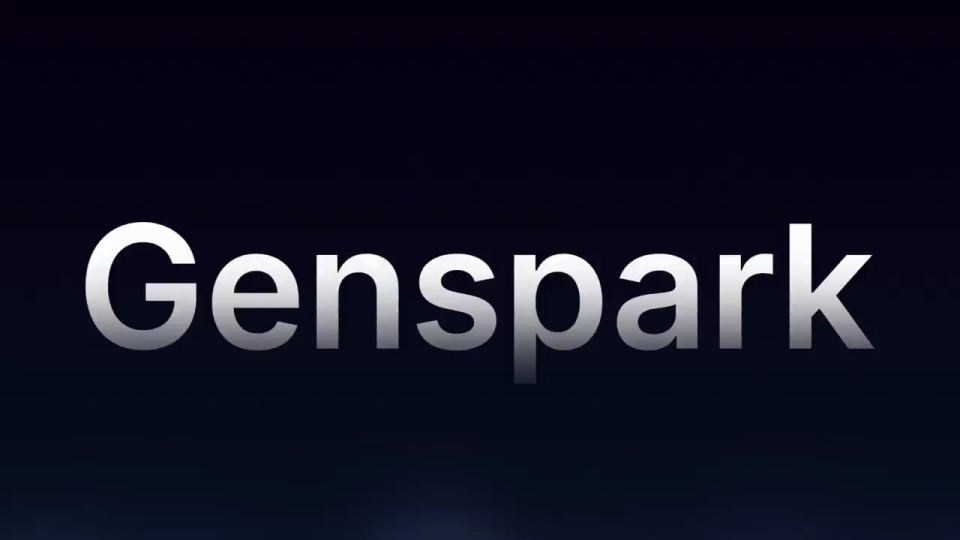
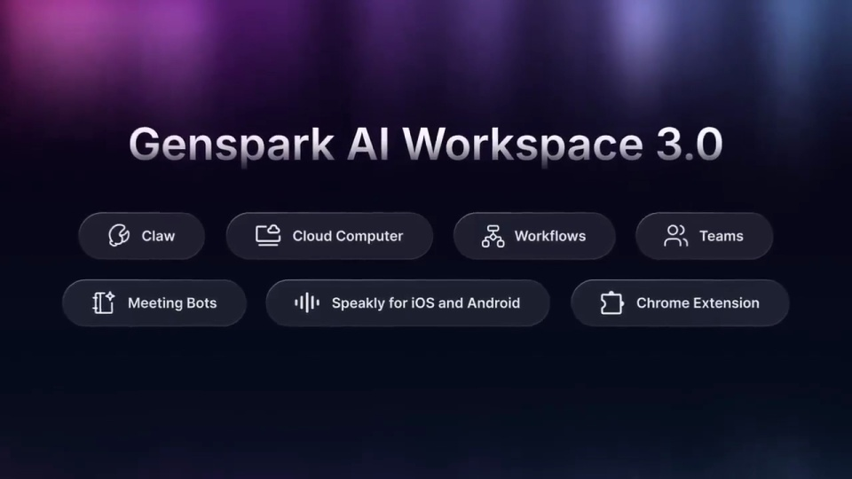
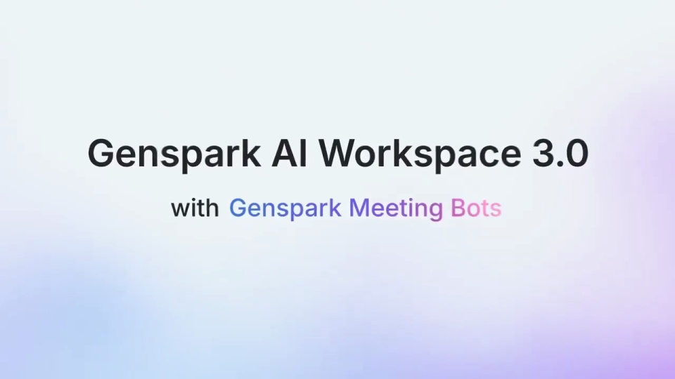
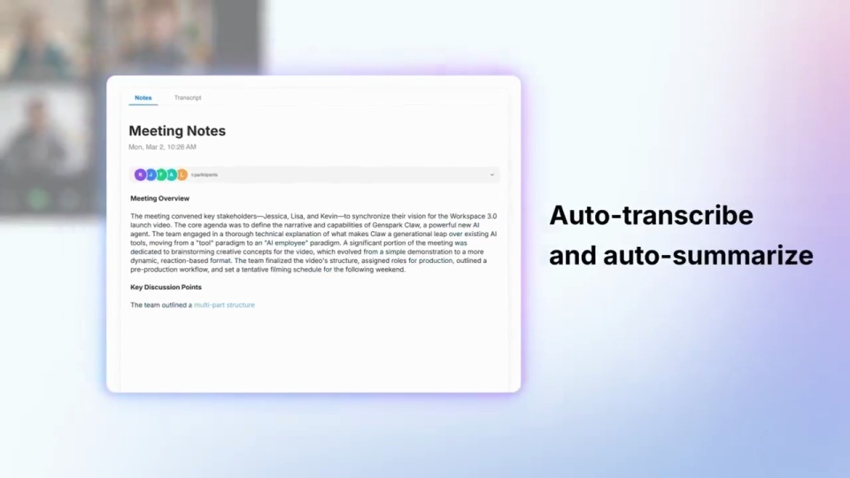
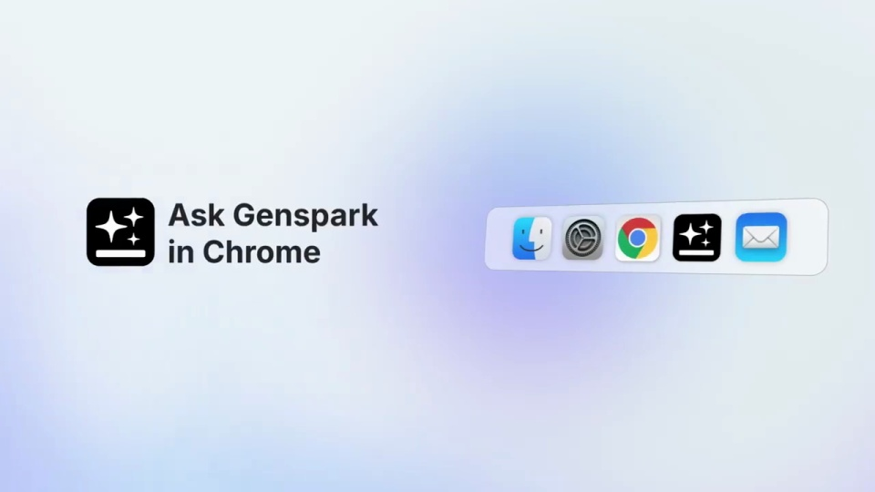
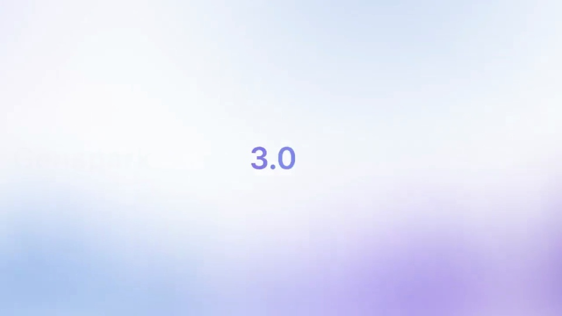

Genspark / V116
Genspark AI Workspace 3.0: Introducing Genspark Claw
工作流、团队聊天、会议、手机语音和浏览器助手分段出现。统一采用短标题接界面的节奏，切换能力时重新建立场景。
构图与编排 可播放 · 可替换内容
整体编排规则示例
查看 HTML 源码
<!doctype html><html lang="zh-CN"><meta charset="utf-8"><meta name="viewport" content="width=device-width,initial-scale=1"><title>Genspark AI Workspace 3.0: Introducing Genspark Claw · sequence</title><style>html,body{margin:0;width:100%;height:100%;overflow:hidden;background:#edf2f5}canvas{display:block;width:100%;height:100%;object-fit:contain}</style><body data-mode="sequence"><canvas width="1000" height="600"></canvas><script src="data.js"></script><script src="common.js"></script><script src="scene.js"></script><script src="bridge.js"></script></body></html>画面元素版本标题功能标题桌面窗口日历会议手机键盘浏览器侧栏
MOTION LANGUAGE
动作与构图
局部动作 · 构图规则
01
每项功能先给一句话，再给操作
工作流、团队聊天、会议、手机语音和浏览器助手分段出现。统一采用短标题接界面的节奏，切换能力时重新建立场景。
02
界面可以倾斜，文字保持水平
桌面与手机以轻微透视旋转进入，重要按钮和输入区再推近。蓝紫环境光始终留在窗口外侧，说明文字保持平直易读。
03
语音输入要看到开始和落字
语音输入要看到开始和落字规则示例
查看 HTML 源码
<!doctype html><html lang="zh-CN"><meta charset="utf-8"><meta name="viewport" content="width=device-width,initial-scale=1"><title>Genspark AI Workspace 3.0: Introducing Genspark Claw · sequence</title><style>html,body{margin:0;width:100%;height:100%;overflow:hidden;background:#edf2f5}canvas{display:block;width:100%;height:100%;object-fit:contain}</style><body data-mode="clip" data-start="45" data-end="54"><canvas width="1000" height="600"></canvas><script src="data.js"></script><script src="common.js"></script><script src="scene.js"></script><script src="bridge.js"></script></body></html>靠近键盘中的语音按钮，显示监听状态后再出现正文，最后拉回完整手机。替换功能时保留操作状态与结果的先后。
SEQUENCE
段落与节奏
点击段落，定位到上方编排示意。






画面参考 · 离散静帧
KEEP THE RELATIONSHIPS
制作其他主题
- 可替换为其他办公套件，保留分功能章节和一条操作因果。
制作约束
版本标题 / 功能标题 / 桌面窗口 / 日历 / 会议 / 手机键盘 / 浏览器侧栏
- 工作流、团队聊天、会议、手机语音和浏览器助手分段出现。统一采用短标题接界面的节奏，切换能力时重新建立场景。
- 桌面与手机以轻微透视旋转进入，重要按钮和输入区再推近。蓝紫环境光始终留在窗口外侧，说明文字保持平直易读。
- 靠近键盘中的语音按钮，显示监听状态后再出现正文，最后拉回完整手机。替换功能时保留操作状态与结果的先后。